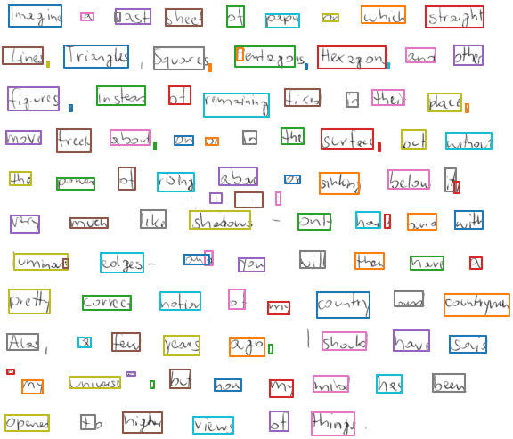
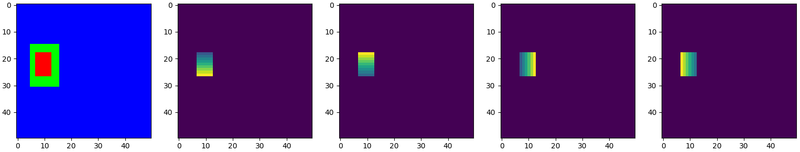
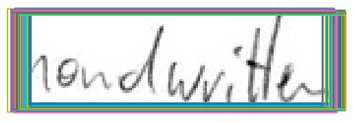

Handwritten Word Detector
Introduction
This article serves as documentation for the
WordDetectorNN implementation.
It is a neural network based detector inspired by the ideas of
Zhou
and
Axler.
The model classifies each pixel as word (inner part or surrounding) or background pixel.
For each pixel of the
inner word class, an axis aligned bounding box (AABB) around the word is predicted.
Because usually multiple AABBs per word are predicted, a clustering algorithm is applied to them.
The model is trained on the IAM dataset, a sample result for the CVL dataset is shown in Fig. 1.

Fig. 1: Detected words for a sample from the CVL dataset.
Model
The AABBs are encoded by the following output maps of the model:
- 3 segmentation maps with one-hot encoding:
- Word (inner part)
- Word (surrounding)
- Background
- 4 geometry maps encode distances between the current pixel and the AABB edges:
Only for pixels of the
inner word class the bounding box geometry is learned.
A
surrounding class is added to avoid mapping both the background and the surrounding of a word to the
background class.
Fig. 2 shows an encoded AABB.

Fig. 2: An encoded AABB with segmentation maps (red: inner part of word, green: surrounding of word, blue: background) and geometry maps (distance to top, bottom, left, right of AABB edges).
ResNet18 is used as a feature extractor.
The model follows the typical U-shape architecture known from segmentation tasks.
An image size of 448×448 is used while training.
The input image is scaled down to feature maps of size 14×14 after the last layer of ResNet18.
The following layers both upscale the maps, and also merge intermediate maps from ResNet18.
The output maps have a size of 224×224, that is half the input width and height.
Loss function
The total loss is the sum of:
- Segmentation loss: the segmentation is regarded as a pixelwise classification problem, therefore cross entropy loss is used
- Geometry loss: a large AABB should be allowed to have larger error than a small AABB, therefore the intersection over union (IOU) of predicted and true AABB is a suitable error measure
Bounding box clustering
Usually, many AABBs are predicted for the same word, each slightly different, see Fig. 3.
The Jaccard distance JD between two AABBs is JD=1-IOU.
A distance matrix containing the (Jaccard) distances between all AABB pairs is computed.
Using this distance matrix, the clustering algorithm DBSCAN computes AABB clusters.
The resulting AABB is computed from the cluster members by taking the median edge positions.

Fig. 3: Multiple AABBs for the same word before clustering.
Computing the distance matrix is a performance bottleneck in the detection pipeline.
Two different strategies to speed up this step are implemented:
- Only take a subset of AABBs
- Compute connected components of inner word segmentation map, and only take a small number of AABBs per component
Summary
The model computes AABBs enclosing the detected handwritten words.
It encodes the AABBs with segmentation and geometry maps.
A clustering step is performed to (ideally) only have one bounding box per word.
Harald Scheidl, 2021